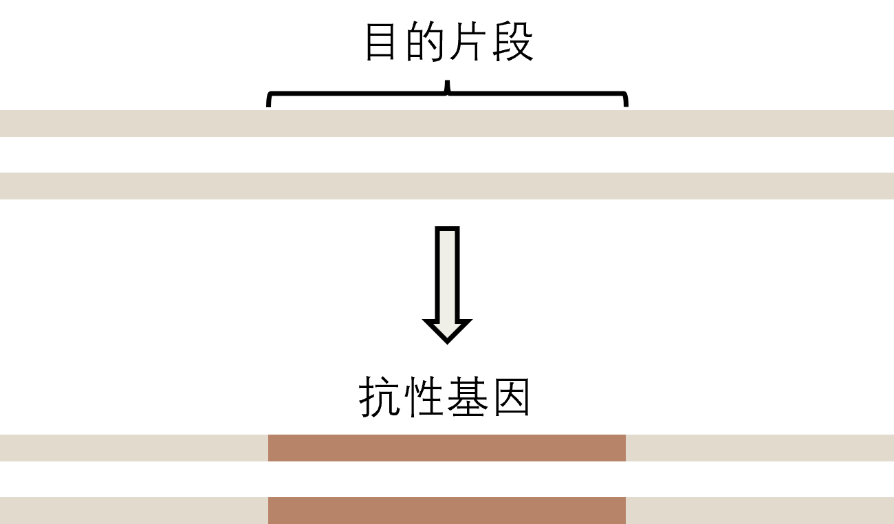
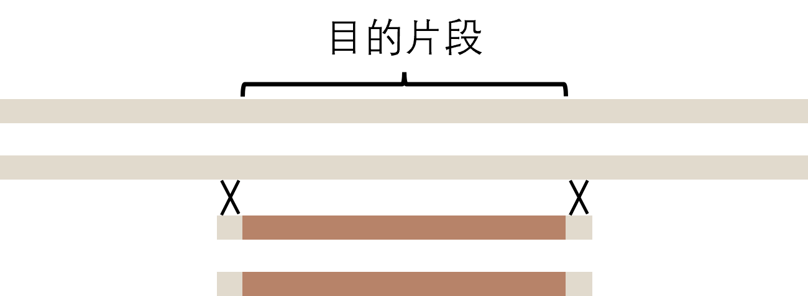
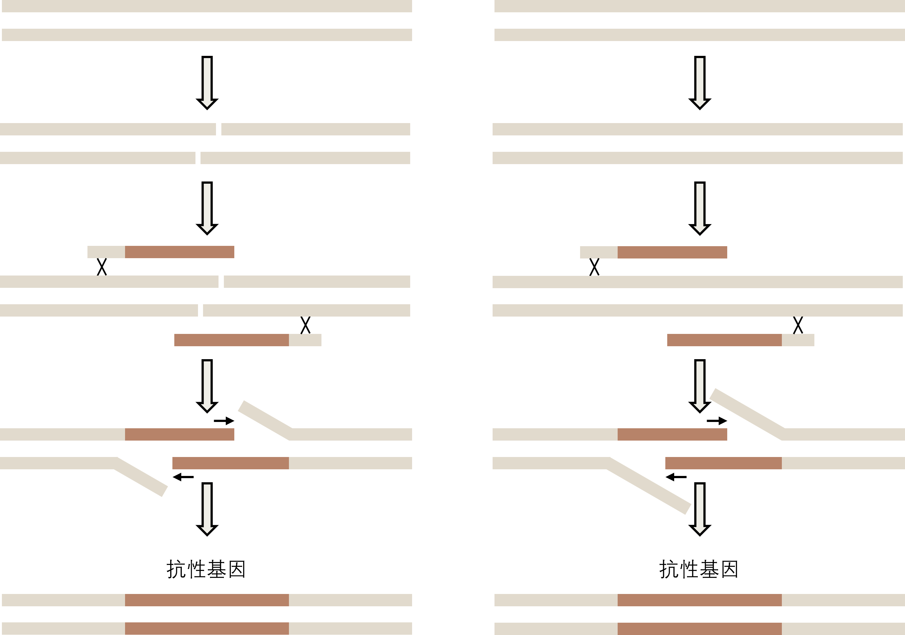
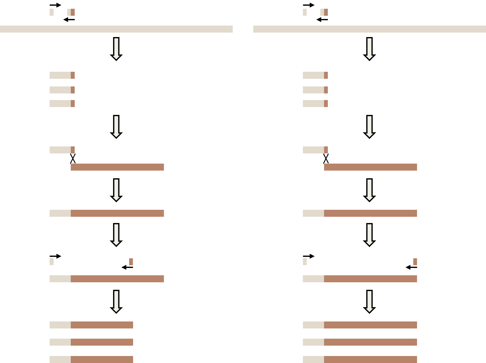
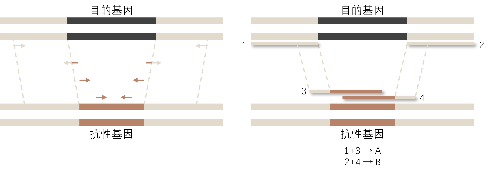

前言
SOE PCR（重叠延伸聚合酶连锁反应，Gene Splicing by Overlap Extension PCR）是一种用于拼接多个 DNA 片段或进行定点突变的分子生物学技术。 它利用具有互补末端的引子使产物形成重叠链，无需传统的限制酶和连接酶，即可将不同片段融合为单一长链。
要干什么
既然要做基因敲除，我们想当然的就是把我们的目的片段去除掉。但是实际上，我们是用一种抗性基因将目的片段替换掉。
下面所示的都为一条 DNA 链，展示了两条单链，省去了氢键。

我们首先想到的就是用包含同源臂的片段进行替换：

但是，这样有一个大问题，我们从哪里找来这么大的一条替换片段？我们不仅要包含抗性基因，还要包含两头同源臂。你可以直接从质粒上 PCR 出抗性基因，但是两头同源臂一般在 500-1000bp，我们不可能通过引物设计的方法使其带上同源臂的。另外就是发生两次交叉互换概率有点低。
因此我们需要通过曲线救国，我们导入两个半截的片段，其大致思路是：
- 依靠 DNA 自然损伤（图左），在我们目的基因处形成单链缺口。
- 投入 A 片段和 B 片段，使其在同源处发生单次交叉互换，把破碎的目的片段换下来。
- 因为 A 片段和 B 片段也具有同源区，因此它们会发生配对。
- 它们互为引物，依赖生物自身损伤修复机制就可以达到敲除目的。

注意，关于是否需要在替换区发生断裂，这一点尚不明确，如图右所示，也有可能在没有损伤的情况下达到类似同源重组的效果。
这个和我们传统理解上的同源重组有一点区别，毕竟重组的地方是单链的同源性。而我们课本中所学的都是双链同源重组模型，但是仔细细究同源重组的分子机理，例如 Holiday 模型，单链同源重组的分子机理是课本所学中的分子机理的子集，所以不能排除右图的猜想。
片段怎么来
我们需要通过一点小巧思来获得 A、B 片段，大致思路如下（左图）：

- 依赖一个同源臂上游引物和一个同源臂下游+抗性基因上游嵌合引物，通过 PCR 得到大量同源臂+抗性基因上游片段
- 从质粒上扩增出线性的抗性基因片段，回收（胶回收或柱回收）线性片段，和上一步合成的片段进行一次同源重组。
- 再通过如图所示进行扩增，得到大量目的片段。
这张图只展示了一个片段的合成，另一个片段合成同理。图中小小的片段就是我们要的引物。
我们也可以合成完整的抗性基因片段（右图），但是抗性重叠基因重叠在 1000bp 以上就足够了，更多重叠区目前不知道对效率有什么影响。
总结

基因长度仅作示例，可任意变化。